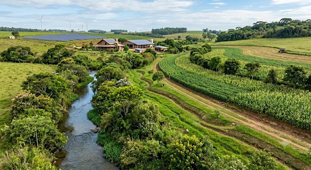
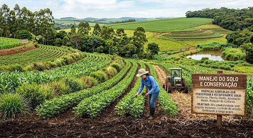
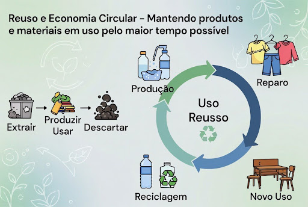
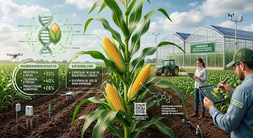
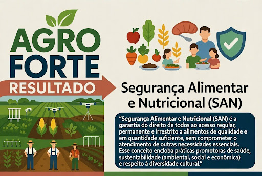

A Estrutura
A infraestrutura verde é uma solução ambiental, econômica e social que assegura a redução do impacto de catástrofes naturais por meio de estudos meteorológicos e climáticos. Muito mais que o objetivo estético do paisagismo, a infraestrutura verde integra a natureza na cidade por meio de redes multifuncionais de vegetação permeável. Mantendo a funcionalidade da paisagem, mesmo que parcialmente, a área verde auxilia na prevenção de enchentes, melhora o microclima e a qualidade do ar no local.

Manejo
O manejo do solo e conservação consiste na adoção de práticas agrícolas que preservam e recuperam as propriedades físicas, químicas e biológicas da terra. O objetivo principal é garantir a alta produtividade sem esgotar os recursos naturais, controlando a erosão e mantendo a fertilidade a longo prazo

Uso
Reuso e economia circular A economia circular é um modelo de produção e consumo que mantém materiais e produtos em uso pelo maior tempo possível. O reuso é um de seus pilares centrais, atuando para estender a vida útil de itens, consertar defeitos e evitar o descarte prematuro, em oposição ao modelo linear de extrair, usar e jogar fora.

Técnica
Técnica Biotecnologia e Melhoramento Genético A biotecnologia fornece as ferramentas essenciais que aceleram e refinam o melhoramento genético. Ao invés de depender apenas de cruzamentos tradicionais lentos, essas tecnologias permitem identificar, isolar e modificar genes específicos, garantindo maior produtividade, resistência a pragas e adaptação climática com extrema precisão.

Resultado
Resultado Segurança Alimentar e Nutricional A Segurança Alimentar e Nutricional (SAN) é a garantia do direito de todos ao acesso regular, permanente e irrestrito a alimentos de qualidade e em quantidade suficiente, sem comprometer o atendimento de outras necessidades essenciais. Esse conceito engloba práticas promotoras de saúde, sustentabilidade (ambiental, social e econômica) e respeito à diversidade cultural.
